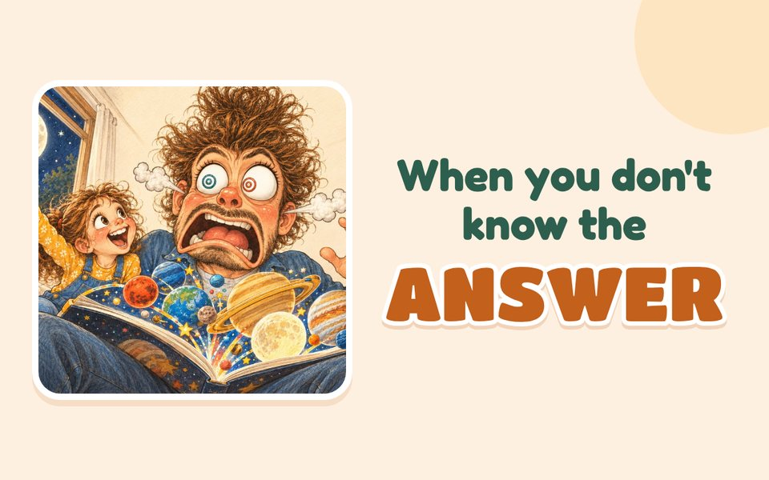
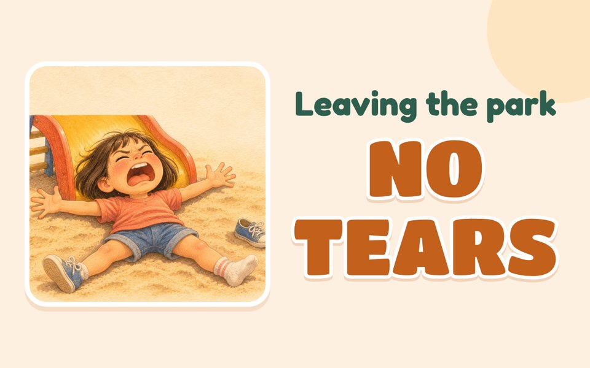
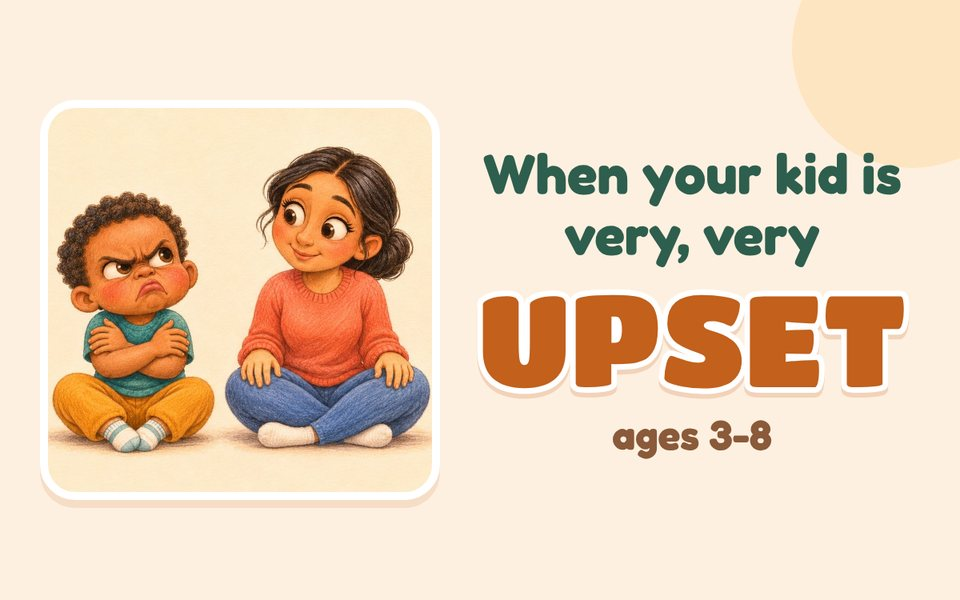
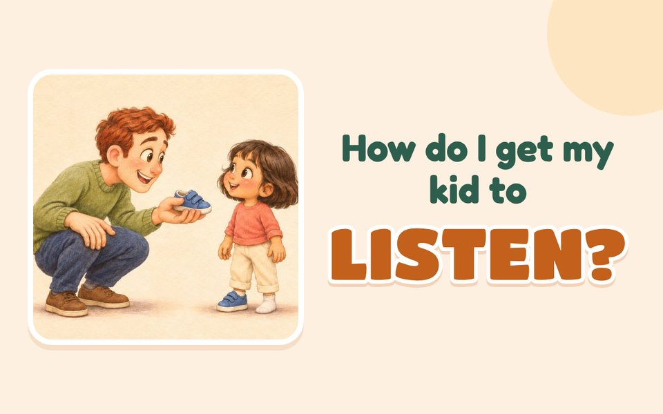

Ophelia’s Little Wonders
For parents
Kind, research-based ideas for kids’ big feelings and tired grown-ups.
Why kids do that
Tricky moments

What to say when you don’t know the answer
Leaving the park without tears (ages 2-5)Learning to be a parent

What to say when your kid is very, very upset (ages 3-8)
How do I get my kid to actually listen?